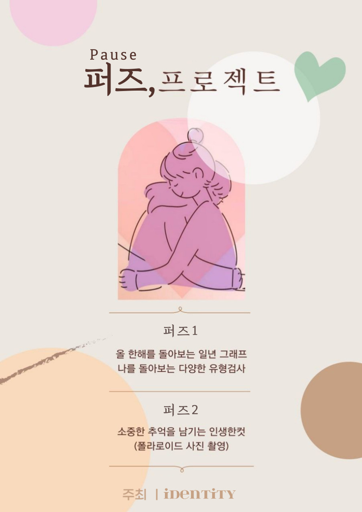
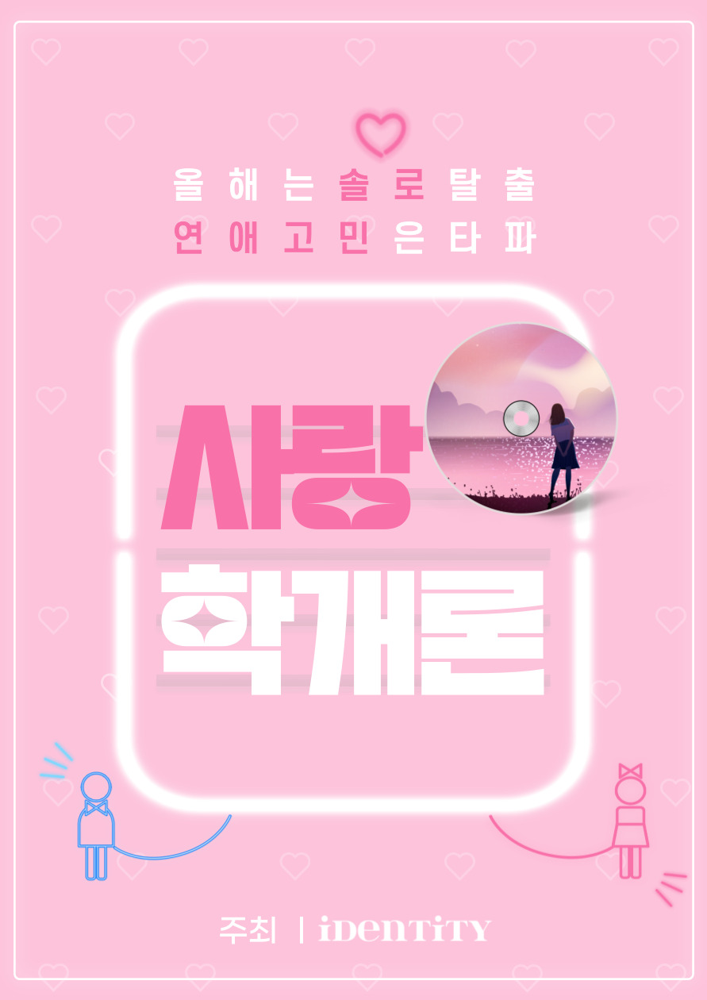

힐 링
퍼즈(pause) 프로젝트
"마음의 쉼"을 통해 한해를 건강하게 살아갈 수 있도록 도와주는 컨설팅 프로그램
파노라마
"나의 인생의 이야기"를 "그림"으로 표현해주며 마음을 돌아보는 힐링 프로그램

사랑학개론
"매력 발굴 프로젝트", 나의 숨겨진 매력과 잠재력을 발견해 나가는 프로그램
"마음의 쉼"을 통해 한해를 건강하게 살아갈 수 있도록 도와주는 컨설팅 프로그램
"나의 인생의 이야기"를 "그림"으로 표현해주며 마음을 돌아보는 힐링 프로그램
"매력 발굴 프로젝트", 나의 숨겨진 매력과 잠재력을 발견해 나가는 프로그램